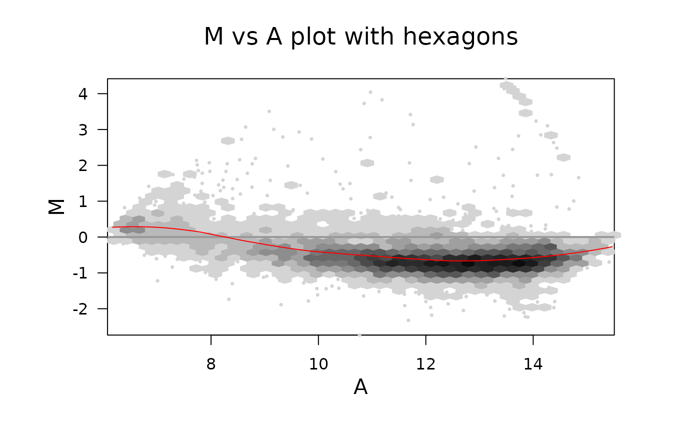

plotMAhex.RdCreates an MA-plot using hexagons with color/glyph coding for control spots.
plotMAhex(MA, array = 1, xlab = "A", ylab = "M",
main = colnames(MA)[array], xlim = NULL, ylim = NULL,
status = NULL, values, pch, col, cex, nbin = 40,
zero.weights = FALSE, style = "colorscale", legend = 1.2,
lcex = 1, minarea = 0.04, maxarea = 0.8, mincnt = 2,
maxcnt = NULL, trans = NULL, inv = NULL, colorcut = NULL,
border = NULL, density = NULL, pen = NULL,
colramp = function(n) { LinGray(n, beg = 90, end = 15) },
newpage = TRUE, type = c("p", "l", "n"),
xaxt = c("s", "n"), yaxt = c("s", "n"),
verbose = getOption("verbose"))an RGList, MAList or MArrayLM object,
or any list with components M containing log-ratios and
A containing average intensities. Alternatively a
matrix, Affybatch or ExpressionSet object.
integer giving the array to be plotted. Corresponds to
columns of M and A.
character strings giving label for x-axis, y-axis or main tile of the plot.
numeric vectors of length 2 giving limits for x-axis (or y-axis respectively), defaulting to min and max of the data.
character vector giving the control status of each spot
on the array, of same length as the number of rows of MA$M.
If omitted, all points are plotted in the default color, symbol and size.
character vector giving values of status to be
highlighted on the plot. Defaults to unique values of status.
Ignored if there is no status vector.
vector or list of plotting characters. Default to integer code 16.
Ignored is there is no status vector.
numeric or character vector of colors, of the same length
as values. Defaults to 1:length(values). Ignored if
there is no status vector.
numeric vector of plot symbol expansions, of the the same
length as values. Defaults to 0.2 for the most common status
value and 1 for the others. Ignored if there is no status vector.
Number of bins
logical, should spots with zero or negative weights be plotted?
string specifying the style of hexagon plot,
see grid.hexagons for the possibilities.
numeric width of the legend in inches of FALSE.
In the latter case, or when 0, no legend is not produced.
characters expansion size for the text in the legend.
fraction of cell area for the lowest count.
fraction of the cell area for the largest count.
cells with fewer counts are ignored.
cells with more counts are ignored.
function specifying a transformation for
the counts such as sqrt.
the inverse transformation of trans.
vector of values covering [0, 1] that determine
hexagon color class boundaries and hexagon legend size boundaries.
Alternatively, an integer (<= maxcnt) specifying the
number of equispaced colorcut values in [0,1].
color for polygon borders and filling of
each hexagon drawn, passed to grid.hexagons.
function accepting an integer n as an argument and
returning n colors.
should a new page start?
strings to be used (when set to "n") for
suppressing the plotting of hexagon symbols, or the x- or y-axis,
respectively.
logical indicating if some diagnostic output should happen.
An MA-plot is a plot of log-intensity ratios (M-values) versus
log-intensity averages (A-values). If MA is an RGList or
MAList then this function produces an ordinary within-array
MA-plot. If MA is an MArrayLM object, then the plot is an
fitted model MA-plot in which the estimated coefficient is on the y-axis
and the average A-value is on the x-axis.
If MA is a matrix or ExpressionSet object, then this
function produces a between-array MA-plot. In this case the A-values in
the plot are the average log-intensities across the arrays and the
M-values are the deviations of the log-intensities for the specified
array from the average. If there are more than five arrays, then the
average is computed robustly using medians. With five or fewer arrays,
it is computed by means.
The status vector is intended to specify the control status of
each spot, for example "gene", "ratio control", "house keeping gene",
"buffer" and so on. The vector is usually computed using the function
controlStatus from package limma and a
spot-types file. However the function may be used to highlight any
subset of spots.
The arguments values, pch, col and cex
can be included as attributes to status instead of being
passed as arguments to plotMA.
See points for possible values for pch,
col and cex.
A plot is created on the current graphics device. and a list with the following items is returned invisibly:
the hexViewport constructed and used.
if a legend has been produced, its
viewport.
a hexbin object built with A as the x coordinate
and M as the y coordinate.
plotMA from package limma,
and gplot.hexbin.
if(require(marray)){
data(swirl)
hb <- plotMAhex(swirl[,1],newpage=FALSE,
main = "M vs A plot with hexagons", legend=0)
hexVP.abline(hb$plot.vp,h=0,col=gray(.6))
hexMA.loess(hb)
}
